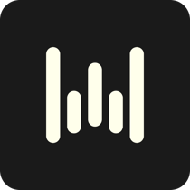
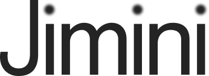
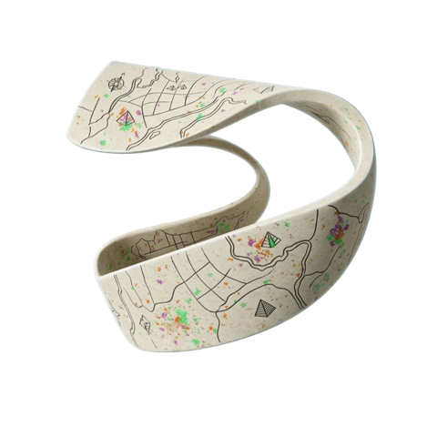
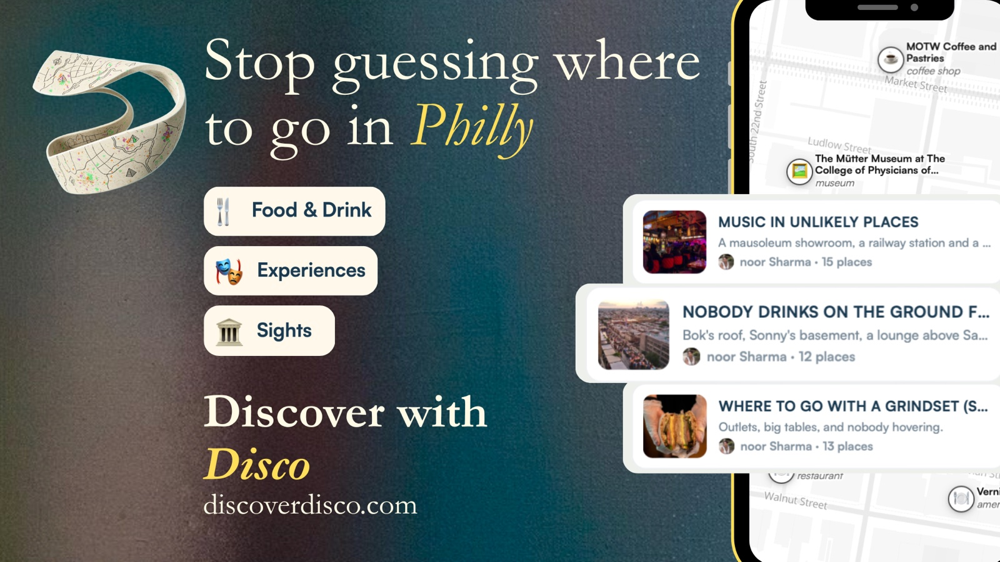
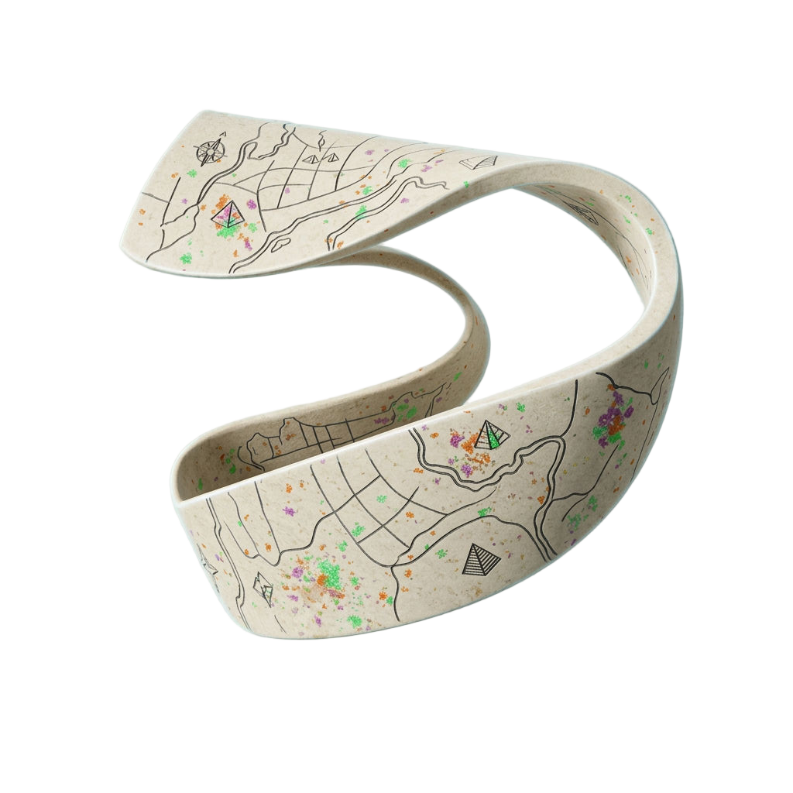
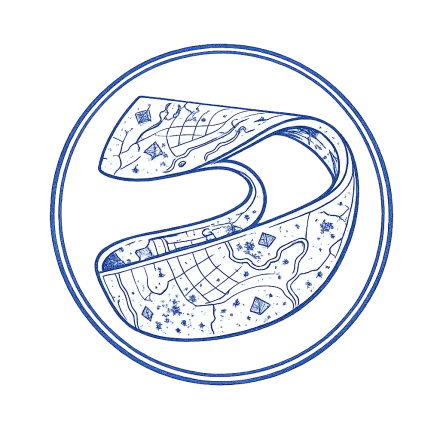

I think in systems, not just campaigns.

2024 to 2025. The first growth hire at Wispr. Joined while Flow was still in beta, to take it from its first 10,000 users to tens of thousands, with high retention and conversion, and started the first conversions to enterprise.
.webp) How Clay drove 20% faster GTM execution with Wispr Flow
20%more customer calls per day$3.08Mestimated cost savings per year
Read it on wisprflow.ai ↗
How Clay drove 20% faster GTM execution with Wispr Flow
20%more customer calls per day$3.08Mestimated cost savings per year
Read it on wisprflow.ai ↗
 How a prolific founder stopped writing emails and started talking
~50%less mental load3 hrssaved per day
Read it on wisprflow.ai ↗
How a prolific founder stopped writing emails and started talking
~50%less mental load3 hrssaved per day
Read it on wisprflow.ai ↗
 Fast, good advice: how a prolific advisor and growth leader uses Flow
2–3×faster communication1+ hrsaved a day
Read it on wisprflow.ai ↗
Fast, good advice: how a prolific advisor and growth leader uses Flow
2–3×faster communication1+ hrsaved a day
Read it on wisprflow.ai ↗

2025. First growth hire. Consumer growth end to end, across the podcast app and B2B onboarding.
 Logo designed in Flora
Logo designed in Flora
YouTube ↗ Spotify ↗ Apple Podcasts ↗ iHeartRadio ↗ jiminihealth.com/podcast ↗

2025 to now. Cofounder, marketing. Disco recommends places by taste rather than ratings: lists written by people who go, for people who are particular about where they end up.
Delhi, Saturday 10 October. Six galleries in one afternoon, Gallery XXL, Photoink, Pristine, Shrine Empire, Akar Prakar and Method, led by an art writer, with a card written for every stop and sign-ups taken on the site. These are the Instagram stories that announced it.



2022 to 2023. Product and packaging, user research, brand audit.
2021. Behavioural architect. Client: Google.